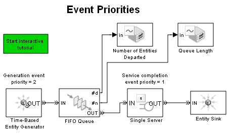
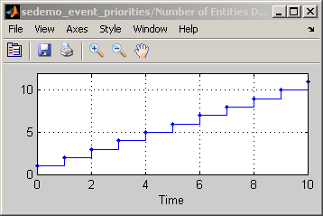
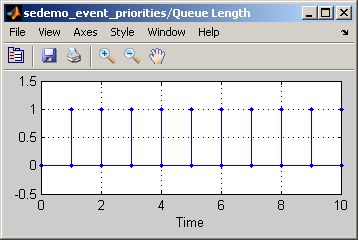
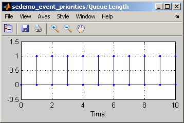
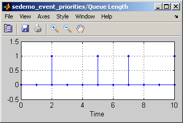

Event Priorities
This tutorial demo introduces Entities, Events and Event Priorities, which are the important concepts in SimEvents®. Events and Entities have a cause and effect relationship, where events generally cause actions to be taken on entities. Event Priorities are associated with events and are used to determine the sequence of execution if multiple events happen at the same time.
Contents
D/D/1: Simplest Queuing Model
Consider a D/D/1 queuing model, where generation (or arrival) rate is deterministic and service rate is also deterministic.
In this model, Time-Based Entity Generator generates entities with intergeneration time of 1 second and Single Server delays each entity with service time of 1 second. Entity generation and service completion are the two types of events in this system.
Time-Based Entity Generator schedules the entity generation event in the Event Calendar for time t+1, where t is the current time. The processing of this event results in entities being generated by the Time-Based Entity Generator, which illustrates the cause and effect relationship between events and entities.
When an entity enters the Single Server at time T, it schedules service completion event in the Event Calendar for time T+1. The processing of this event results in the entity departing from Single Server.
open_system('sedemo_event_priorities');
 Executing Entity Generation Event After Service Completion Event
Since intergeneration time for Time-Based Entity Generator and service time for Single Server are the same, entity generation event and service completion event are scheduled for the same simulation time. SimEvents uses event priority to determine which of these events to process first.
In this model, the entity generation event has a lower event priority than the service completion event, so the service completion event is processed before the entity generation event when they occur at the same time. Thus departure from Single Server occurs before generation from Time-Based Entity Generator. To observe this note that the Queue length is always zero.
When an entity is generated, the Single Server is available to accept the entity since service completion event was already processed.
set_param('sedemo_event_priorities/Time-Based Entity Generator', 'PriorityEntityGeneration', '2'); set_param('sedemo_event_priorities/Single Server', 'PriorityServiceCompletion', '1'); sim('sedemo_event_priorities');
Executing Entity Generation Event Before Service Completion Event
If the Event Priorities are reversed, then entity generation event is processed before Service Completion Event when they occur at the same time.
In this case, generation from Time-Based Entity Generator occurs before departure from Single Server. Again this can be observed by noting the Queue length. Because the entity generation event was processed before the service completion event, the Single Server isn't available as soon as an entity is generated.
Notice that in "Queue Length" plot, the number of entities increases by one when entity arrives in the FIFO Queue block. At the same instant but after the generation event, Single Server finishes processing its entity and can accept a new entity. Thus, the number of entities in FIFO Queue block becomes zero instantaneously.
set_param('sedemo_event_priorities/Time-Based Entity Generator', 'PriorityEntityGeneration', '1'); set_param('sedemo_event_priorities/Single Server', 'PriorityServiceCompletion', '2'); sim('sedemo_event_priorities');
 
 Handling Events With Same Event Priority
The previous two cases demonstrate how to use event priority to control the sequencing of simultaneous events. If two events have same event priority, SimEvents provides two options for handling multiple event occurring at the same time. SimEvents Event Calendar can a) Randomize the two events occurring at the same time, or b) Handle them in an arbitrary fashion. These options are available in the SimEvents pane in the Configuration Parameters dialog.
If the event priority for entity generation event and service completion event are the same, then the processing sequence for these events varies during simulation. Using the ramdomization option from SimEvents pane, in some cases the entity generation event is executed before the service completion event and in some other cases it is executed after. As a result, in some cases generation from Time-Based Entity Generator occurs before departure from Single Server. This can be observed in the "Queue Length" plot as in some cases the length is zero and in some other cases the length increases by one and then instantaneously returns to zero.
set_param('sedemo_event_priorities/Time-Based Entity Generator', 'PriorityEntityGeneration', '1'); set_param('sedemo_event_priorities/Single Server', 'PriorityServiceCompletion', '1'); sim('sedemo_event_priorities');
bdclose('sedemo_event_priorities');